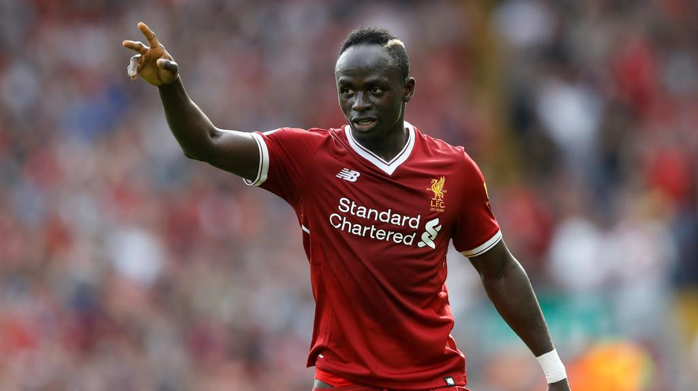
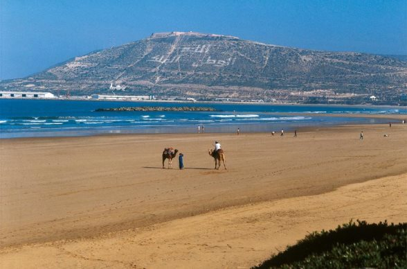

About Me
Hi, my name is Yaseen Fulat, welcome to my Website


Thanks for checking out my website, this page gives you a little information about myself. Like I said before, my name is Yaseen, I am 22 and I currently study Computing at DMU in Leicester. From the pictures above, you can tell I support the best team in the world, Liverpool FC! YNWA. I love to travel, most recently I travelled to Agadir in Morocco which had amazing weather. Also, as you can tell from the website, Video Games are a great passion of mine and are the main reason why I built this website around the theme.